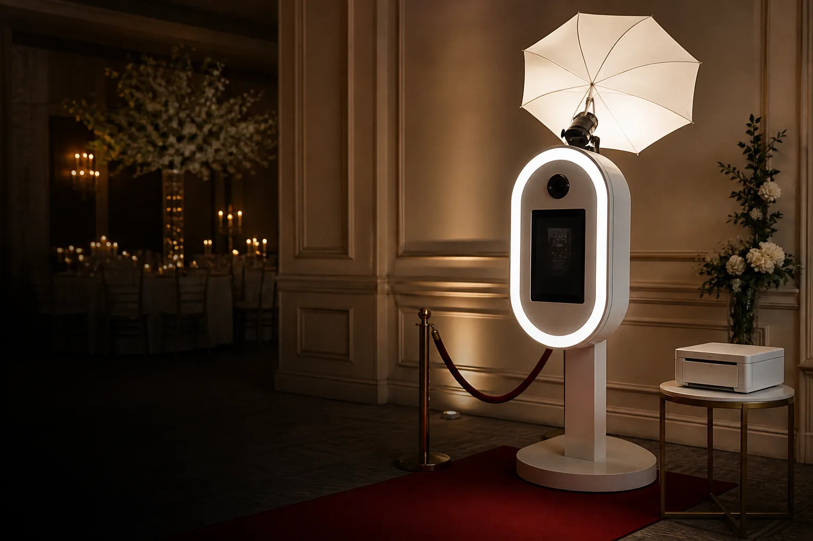
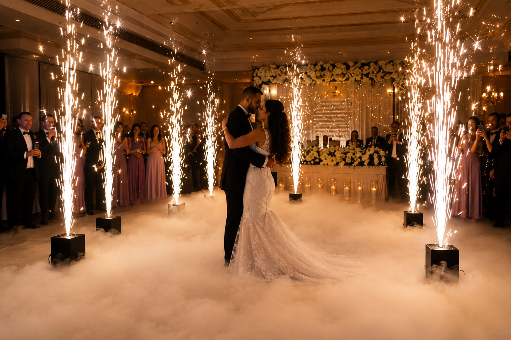

Weddings
Best for first dances, grand entrances, aisle exits, cake reveals, and photo/video moments that need scale.
Recommended: Sparks + Dancing on Clouds
Cold Sparks & Heavy Low Fog
Wireless cold-spark effects and dense, low-lying clouds for entrances, first dances, and statement reveals.
Every setup is reviewed against venue rules, clearances, power, and the event timeline.
Choose cold sparks for vertical impact, heavy low fog for atmosphere, or combine both for a cinematic first dance, entrance, or reveal.
Best for first dances, grand entrances, aisle exits, cake reveals, and photo/video moments that need scale.
Recommended: Sparks + Dancing on Clouds
Best for product reveals, stage moments, award entrances, and branded activations where timing matters.
Recommended: Cold Sparks or Complete Production
Best for birthdays, anniversaries, engagement parties, and milestone moments that deserve a bigger reveal.
Recommended: Signature Moment
Pricing is custom while packages are being finalized, but this shows how each option is typically used.
| Feature | Cold Sparks | Heavy Low Fog | Sparks + Fog |
|---|---|---|---|
| Best for | Entrances, exits, reveals, stage moments | First dances, aisle reveals, slow cinematic moments | First dance, entrance, and full-room impact |
| Starting price | Custom quote | Custom quote | Custom bundle quote |
| Equipment | Wireless 350W cold-spark machines | 3500W heavy low-fog machine | Cold sparks + heavy low fog together |
| Effect output | Adjustable spark fountains up to 5 m | Dense, ground-hugging cloud effect | Vertical sparks with low-lying clouds |
| Operation | Remote-controlled cues | Timed operation around the moment | Coordinated cues by one team |
| Venue review | Clearances and written venue approval required | Power, ventilation, floor, and venue review required | Full placement and timeline review required |
| Photo booth bundle | Available | Available | Recommended for complete production |
Already know your venue and event timeline? Request custom pricing.
Each effect has a different job. Choose the feeling you want in the room, then we will plan the equipment around the venue.


Bundle photo booth entertainment, cold sparks, and heavy low fog into one coordinated package with one planning flow, one setup schedule, and one team.
Build a Combined Package →

Compact 350W wireless cold-spark machines and a 3500W heavy low-fog system, planned around your room size and timeline.
Venue approval, clearances, floor conditions, ventilation, power, and safe placement are reviewed before the effect is confirmed.
Add a photo booth so your reveal, first dance, and guest entertainment are handled through one coordinated production plan.
Effects planning depends heavily on the room, venue rules, ceiling height, power access, and how your timeline is built.
Toronto venues can have strict effect policies and tight loading windows. Share the venue early so approvals, setup access, and cue timing can be planned properly.
Barrie and Simcoe County weddings often benefit from flexible spark layouts and low-fog planning around larger dance floors, barns, banquet halls, and estate venues.
For Vaughan, Mississauga, Brampton, and surrounding GTA events, we can quote effects alone or bundle them with photo booth coverage, travel, and setup timing.
Quick answers for effect planning, venue approval, and packages.
No. Cold sparks require venue approval and must be reviewed against clearance, placement, floor surface, and local requirements before being confirmed.
The machines can create adjustable spark fountains up to 5 m for approved setups. Final height depends on the venue, ceiling clearance, and safe placement.
Heavy low fog is ideal for first dances, entrances, reveals, and slow cinematic moments where you want dense clouds that stay close to the floor.
Yes. Combined packages are available and can include photo booth coverage, cold sparks, and heavy low fog in one coordinated quote.